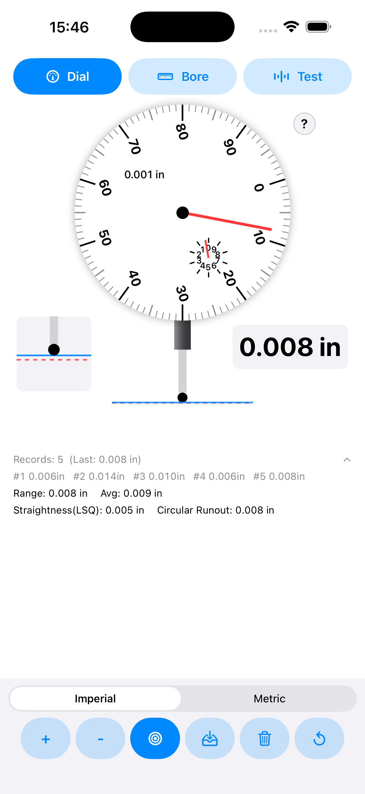
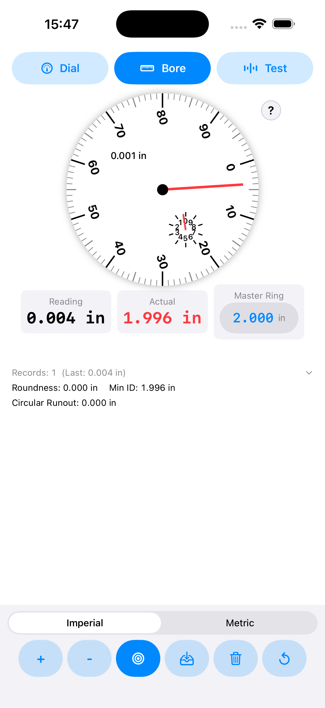
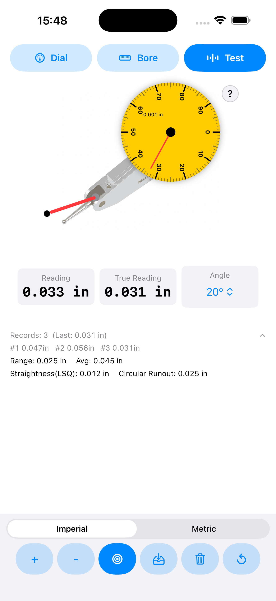

Turn dial readings into usable results — instantly.
Dial Indicator Helper helps you practice and use dial-indicator workflows on iPhone: dial, bore gauge, and test indicator modes; imperial/metric switching; fast “Set Zero”; recorded readings; and computed stats like range, circular runout, and straightness.
Built-in modes & calculations
Designed around what you do at the surface plate, the lathe, and the mill.
Dial mode
Zero quickly, step readings up/down, and record deltas from the current zero position.
Bore gauge mode
Use a master ring size reference, record readings, and compute values like circular runout and min inscribed diameter.
Test indicator mode
Supports angle-based cosine error correction to get a more accurate true value from the indicator reading.
Stats that matter
Range, average, straightness (least-squares), and circular runout computed from recorded readings.
Imperial & metric
Toggle units while preserving your existing readings by converting values appropriately.
Offline by design
No login, no ads, no tracking SDKs. You keep control of your data and workflow.
Quick tutorial
Example workflow to capture readings and get usable inspection numbers.



FAQ
Does the app need the internet?
No. Core functionality works offline.
Does it collect data or track me?
No developer analytics or tracking SDKs. See Privacy.
Where are my readings stored?
Readings are kept on-device during use; any saved records (if you choose to save) stay local to your device.
Support / contact
Download
Open the App Store page and install on iPhone.